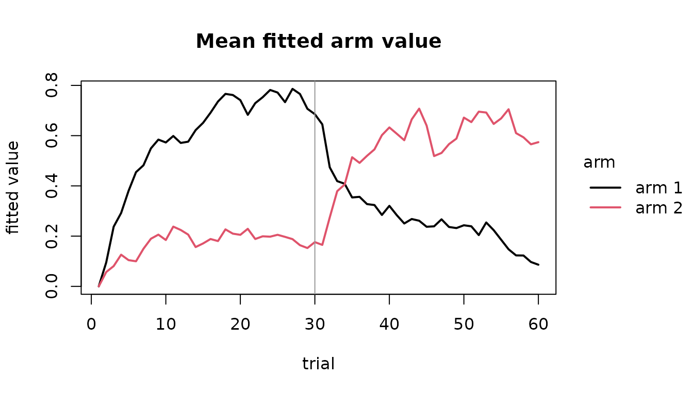

A reinforcement-learning model is usually fitted one subject at a time, and the group question is then asked of the estimates: are the learning rates different between conditions? That two-step answer throws away the uncertainty in each estimate before comparing them.
This package writes those models as frmtmb families, so every parameter is an ordinary distributional parameter with its own linear predictor. A learning rate takes a condition effect the way a mean does, and the effect comes back with a standard error from one fit.
The task
A probabilistic reversal task. One arm pays with probability 0.7 and the other with 0.3, and halfway through the session they swap. The design carries the payoff schedule of BOTH arms on every trial, which is what makes a draw from the model coherent: a simulated subject that takes the arm the real one did not still has to be paid.
set.seed(1)
d <- frm_task_design("reversal", n_subject = 20, n_trial = 60, seed = 1)
head(d)
#> id trial choice after_reversal pay1 pay2
#> 1 1 1 1 before 1 0
#> 2 1 2 1 before 1 1
#> 3 1 3 1 before 1 1
#> 4 1 4 1 before 0 0
#> 5 1 5 1 before 1 1
#> 6 1 6 1 before 0 1
table(d$after_reversal)
#>
#> before after
#> 600 600Now draw choices from the model, with a learning rate that really
does differ before and after the reversal, and real spread between
subjects. frm_task_simulate() takes parameters on their
natural scales, one value per subject.
subj <- levels(d$id)
u <- stats::rnorm(length(subj), 0, 0.5)
after <- d$after_reversal == "after"
eta <- stats::qlogis(0.30) + 1.1 * after + u[as.integer(d$id)]
d$choice <- frm_task_simulate(
bandit2arm_delta(subject = id, trial = trial), d,
pars = list(alpha = stats::plogis(eta), tau = 3), seed = 1)[[1]]$choice
mean(d$choice == 1)
#> [1] 0.5441667The fit
This is an ordinary frm() call. The main right-hand side
is the LEARNING RATE’s predictor, because the family declares
alpha as its primary distributional parameter;
tau, the softmax sensitivity, gets its own.
fit <- frm(bf(choice | reward(pay1, pay2) ~ after_reversal + (1 | id),
tau ~ 1),
family = bandit2arm_delta(subject = id, trial = trial),
data = d)
fixef(fit)
#> $alpha
#> (Intercept) after_reversalafter
#> -0.4863953 0.5056686
#>
#> $tau
#> (Intercept)
#> 1.02737The second coefficient is the thing the study is about, and it has an interval:
ci <- confint(fit)
ci[grepl("after_reversalafter", rownames(ci)), , drop = FALSE]
#> lwr upr est
#> alpha_after_reversalafter -0.07081031 1.082148 0.5056686On the probability scale, the fitted learning rate before and after:
b <- unlist(fixef(fit))
c(before = stats::plogis(b[["alpha.(Intercept)"]]),
after = stats::plogis(b[["alpha.(Intercept)"]] +
b[["alpha.after_reversalafter"]]))
#> before after
#> 0.3807431 0.5048182Nothing about that formula is special to a reversal.
after_reversal could be a clinical group, a drug dose,
s(trial) for a rate that drifts smoothly through the
session, or a random slope. A separate prl family would fit
one rate before and one after and leave you to compare them; this fits
the DIFFERENCE.
Reading the trajectory
The value estimates and prediction errors are not in the fitted object. They are recomputed by replaying the recursion at the estimates.
tr <- frm_value_trace(fit)
head(tr)
#> subject trial q1 q2 pe p
#> 1 1 1 0.0000000 0.0000000 1.0000000 0.5000000
#> 2 1 2 0.3807431 0.0000000 1.0000000 0.2566057
#> 3 1 3 0.3807431 0.3807431 0.6192569 0.5000000
#> 4 1 4 0.3807431 0.6165209 -0.6165209 0.6589671
#> 5 1 5 0.3807431 0.3817848 0.6182152 0.5007276
#> 6 1 6 0.3807431 0.6171660 0.3828340 0.6593720q1 and q2 are the values the choice on that
trial was made ON, before the outcome moved them, which is the ordering
a plot of learning needs. pe is the prediction error and
p is the fitted probability of the choice that was actually
made.
agg <- aggregate(cbind(q1, q2) ~ trial, tr, mean)
long <- rbind(data.frame(trial = agg$trial, value = agg$q1, arm = "arm 1"),
data.frame(trial = agg$trial, value = agg$q2, arm = "arm 2"))
if (requireNamespace("tinyplot", quietly = TRUE)) {
tinyplot::tinyplot(value ~ trial | arm, data = long, type = "l", lwd = 2,
main = "Mean fitted arm value", ylab = "fitted value")
} else {
plot(agg$trial, agg$q1, type = "l", ylim = range(agg$q1, agg$q2),
xlab = "trial", ylab = "fitted value", lwd = 2,
main = "Mean fitted arm value")
lines(agg$trial, agg$q2, lty = 2, lwd = 2)
legend("topright", c("arm 1", "arm 2"), lty = c(1, 2), lwd = 2, bty = "n")
}
abline(v = 30, col = "grey60")
The two curves cross after the reversal, which is the model tracking the contingency change.
p is the per-trial factor of the likelihood, so
sum(log(p)) is the CONDITIONAL data log-likelihood given
the fitted subject effects. In a fit with no random effects that is
logLik(fit) exactly; here it is not, because
logLik() reports the Laplace-approximated MARGINAL
likelihood, which carries the random-effect density and a curvature term
besides.
c(conditional = sum(log(tr$p)), marginal = as.numeric(logLik(fit)))
#> conditional marginal
#> -610.849 -610.849What refuses, and why
These families declare no mean on the response scale. The response is
the option a subject took, coded 1 to K, and it is nominal: arm 2 is not
twice arm 1, and the Iowa gambling task’s four decks have no order at
all. Core forms a residual as y - mean, so a mean declared
here would make fitted(),
predict(type = "response") and every residual return
arithmetic on a category code.
fitted(fit)
#> Error:
#> ! fitted() is not defined for family 'bandit2arm_delta'frm_value_trace() above returns everything a mean would
have carried, and more. frm_compat() is the place to ask
what else refuses:
frm_compat("bandit2arm_delta", "residuals")$status
#> [1] "refused"
frm_compat("bandit2arm_delta", "s()")$status
#> [1] "works"
frm_compat("bandit2arm_delta", "importance")$status
#> [1] "works"That last one refused in the first release and works now. The correction reweights draws from the Laplace Gaussian and needs one log-likelihood value per subject; the families declare them, so it runs. The next section says what it is worth.
The Laplace caveat
frmtmb integrates the subject effects out with a Laplace
approximation, which is exact only when the conditional log-density is
quadratic. For binary choices it is not, and the fewer trials a subject
has the less quadratic it is. The consequence was measured by
simulation, 100 replicates at 40 subjects, the full tables in
?frmtmb.learn:
| parameter | bias at 100 trials | coverage | bias at 20 trials | coverage |
|---|---|---|---|---|
alpha_(Intercept) |
+0.009 | 0.97 | -0.026 | 0.92 |
alpha_after |
-0.015 | 0.94 | +0.009 | 0.91 |
tau_(Intercept) |
+0.003 | 0.95 | +0.016 | 0.96 |
log sd(alpha) |
-0.266 | 0.99 | -1.596 | 0.95 |
The fixed effects survive short sessions: at a fifth of the trials their bias is still inside Monte Carlo error and their intervals still cover near the nominal rate. Report a condition effect on a learning rate from a short session.
The variance component’s point estimate does not survive, and its
interval does. At 20 trials log sd(alpha) comes out 1.6 too
low, but the spread of the estimates rises from 0.88 to 3.01, so the
interval widens at least as fast as the estimate degrades and still
covers 0.95. Treat a subject-level standard deviation from twenty binary
trials as a lower bound, and read its interval rather than its point
estimate.
frm(importance =) is what separates Laplace error from
the ordinary downward bias of a variance component estimated from binary
data with few levels, and it now runs. Measured on this design, six
datasets per cell: at 100 trials, where the Laplace fit has kept a real
variance component, the correction moves sd(alpha) up by
0.11 to 0.18 log units and toward the truth, with a Monte Carlo standard
error a third of that and effective sample sizes near 1. So part of the
downward bias at 100 trials IS Laplace error, and it is a modest
part.
At 20 trials the correction has nothing to work with. Five of six
Laplace fits have already collapsed sd(alpha) to 1e-4, and
the correction then walks at its own step cap for every round while
warning that it did not converge. A shift reported alongside that
warning is the step cap rather than an estimate, so check
sqrt(VarCorr(fit)) and read the warning before believing
one. The warning advises raising
frmtmb_control(importance_rounds =), and on a collapsed
component that makes the artifact bigger in exact proportion: five
rounds of a 0.3645 cap give 1.822 and ten give 3.645.
?frmtmb.learn carries the per-dataset table.
The families
fams <- frm_learn_families()
knitr::kable(fams[, c("family", "hbayesdm", "task", "options")])| family | hbayesdm | task | options |
|---|---|---|---|
| bandit2arm_delta | bandit2arm_delta | two-armed bandit | 2 |
| bandit2arm_dual | prl_rp (split = ‘outcome’) | two-armed bandit, reward and punishment | 2 |
| prl_fictitious | prl_fictitious | probabilistic reversal, counterfactual updating | 2 |
| bandit4arm2_kalman_filter | bandit4arm2_kalman_filter | restless four-armed bandit | 4 |
| ts_par7 | ts_par7 | two-stage Markov decision task | 2 then 2 |
| igt_pvl_delta | igt_pvl_delta | Iowa gambling task | 4 |
| igt_orl | igt_orl | Iowa gambling task | 4 |
| rlddm | none | two-armed bandit, choices and response times | 2 |
Each family’s parameters, and the map to hBayesDM’s spelling of them:
| family | pars | hbayesdm_pars |
|---|---|---|
| bandit2arm_delta | alpha, tau | A, tau |
| bandit2arm_dual | Arew, Apun, tau | Arew, Apun, beta |
| prl_fictitious | alpha, bias, tau | eta, -tau * alpha, beta |
| bandit4arm2_kalman_filter | tau, lambda, center, mu0, sigma0, sigmaD | beta, lambda, theta, mu0, sigma0, sigmaD |
| ts_par7 | w, alpha1, tau1, alpha2, tau2, lambda, pers | w, a1, beta1, a2, beta2, lambda, pi / tau1 |
| igt_pvl_delta | alpha, shape, lambda, tau | A, alpha, lambda, 3^cons - 1 |
| igt_orl | Arew, Apun, k, betaF, betaP | Arew, Apun, K, betaF, betaP |
| rlddm | alpha, drift, bs, ndt, bias | no counterpart; see ?rlddm |
alpha is always a learning rate on (0, 1) and
tau is always the softmax sensitivity on (0, Inf), so what
a formula does to alpha means the same thing whichever
family it is written against. Two cautions the map does not remove. Core
refuses a parameter name containing a dot or an underscore, which is why
the dual-rate family spells its rates Arew and
Apun. And lambda is used by the literature for
three unrelated quantities: the arm decay in the Kalman filter, the
eligibility trace in the two-step model, and loss aversion in the Iowa
gambling task. Each family’s help says which. In particular, hBayesDM’s
alpha for igt_pvl_delta is this package’s
shape, not this package’s alpha.
All eight share one recursion, which walks trials once and updates every subject at each step. A family supplies a choice rule and a learning rule and is a few dozen lines; the walk, the padding for unequal trial counts, the softmax, and the three modes it runs in (likelihood, fitted trajectory, simulation) are written once.
rlddm() is the one that does not softmax. Its value
difference drives the drift rate of a two-boundary diffusion, so a trial
contributes the joint density of which boundary was reached and when,
and choices and response times are modeled together. Its response is the
response TIME and the boundary travels in dec(); the
density comes from frmtmb.eam::wiener_lpdf().
A second family, to show how little changes. The dual-rate learner absorbs good news and bad news at different speeds, and the asymmetry is the parameter most of the clinical literature is about:
fit2 <- frm(bf(choice | reward(pay1, pay2) ~ 1, Apun ~ 1, tau ~ 1),
family = bandit2arm_dual(subject = id, trial = trial),
data = d)
b2 <- unlist(fixef(fit2))
c(rate_after_reward = stats::plogis(b2[["Arew.(Intercept)"]]),
rate_after_loss = stats::plogis(b2[["Apun.(Intercept)"]]))
#> rate_after_reward rate_after_loss
#> 0.4818079 0.4151094On BINARY payoffs the two settings of split are the same
model, which is worth knowing before reading anything into the choice:
the value store stays inside the payoff range, so the sign of the
prediction error and the sign of the outcome agree on every trial. They
differ only when the payoff is graded. See
?bandit2arm_dual.
Where to go next
-
?bandit2arm_deltaand the other seven family pages for the equations and each family’s own cautions. -
?frm_value_tracefor the trajectory, and?frm_task_simulatefor drawing datasets from the generative process. -
?frmtmb.learnfor the Laplace numbers, the recovery tables, and whatfrm(importance =)is worth on which designs. -
vignette("reinforcement-learning", package = "frmtmb")for the structured-family protocol these families are built on, written out longhand for one model.